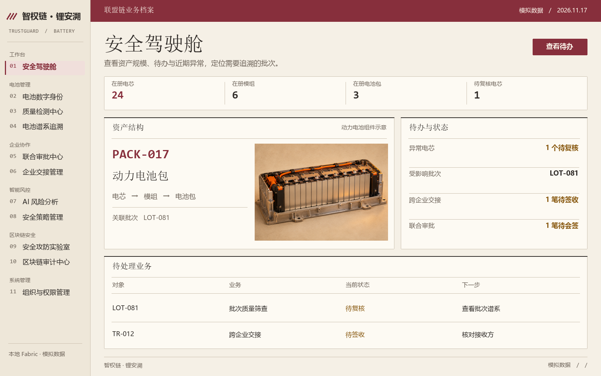
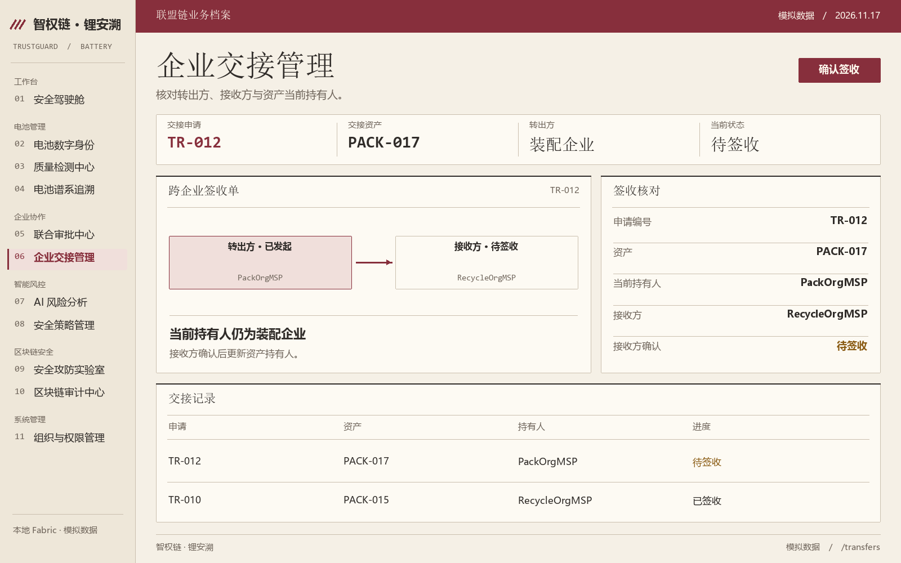
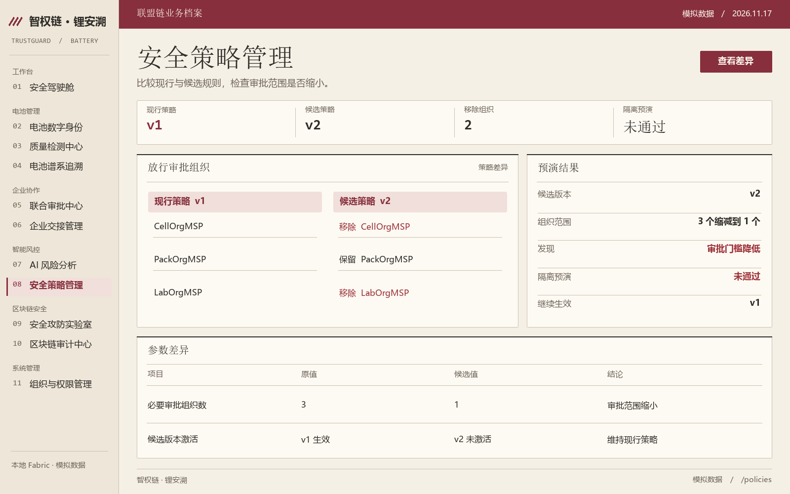
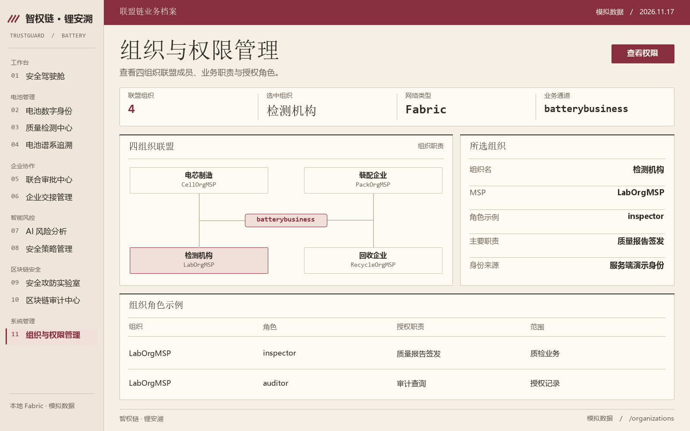

安全驾驶舱
/ · GET /api/bff/dashboard

电池数字身份
/identity · GET /api/bff/battery

质量检测中心
/inspections · GET /api/bff/inspections

电池谱系追溯
/trace · GET /api/bff/trace

联合审批中心
/approvals · GET /api/bff/releases

企业交接管理
/transfers · GET /api/bff/transfers

AI 风险分析
/risk · POST /api/bff/risk/operations

安全策略管理
/policies · POST /api/bff/policy-preview

安全攻防实验室
/lab · POST /api/bff/lab/run

区块链审计中心
/audit · GET /api/bff/audit

组织与权限管理
/organizations · GET /api/bff/session
